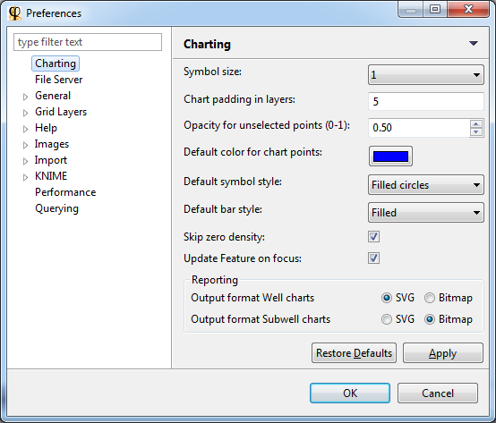

There are a lot of adjustable preferences for 2D Scatter Charts, 3D Scatter Charts or Density Charts. These preferences are divided into several levels, where the setting at a more specific level overwrites the settings at a more generic level:
- Default Preferences
- Per-Plot Settings (overwrites default)
- Per-Layer Settings (overwrites per-plot)
Default Preferences
Preferences changed here will apply to all plots and all layers. You can access these preferences via the menu: Window > Preferences

Per-Plot Settings
Depending on the plot you have opened, different options will appear in the action menu. Some functions will be explained in more detail in later topics.
| Button | Meaning |
|---|---|
| Open a menu with plot layer options. | |
| Toggle visibility mode: selected points or all points. | |
| Toggle mouse mode: Point selection mode – Pan mode – Zoom mode. | |
| Rescale the plot to fit in the current view size. | |
| Select features for each axis (accordingly X, Y or Z). It is also possible to plot calculated values by entering a formula. | |
| In well plots: toggle between raw - normalized data. In subwell plots: toggle between well - plate limits. | |
| Edit classification of selected items. For more information, see Subwell Classification. | |
| Arrange view layout, i.e. show/hide the legend. | |
| Open or create a Saved View or Report. | |
| Pin (freeze) the plot so its contents no longer changes when you select another well or plate. |